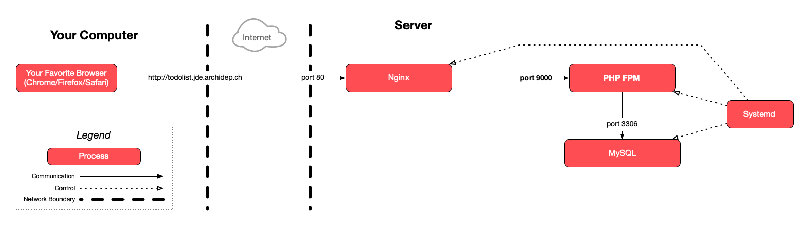
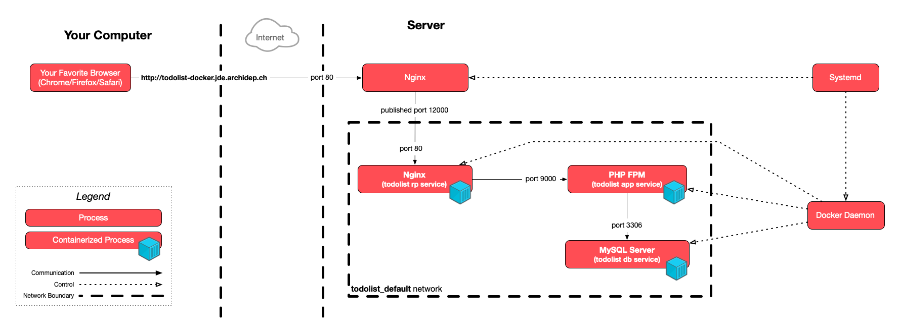
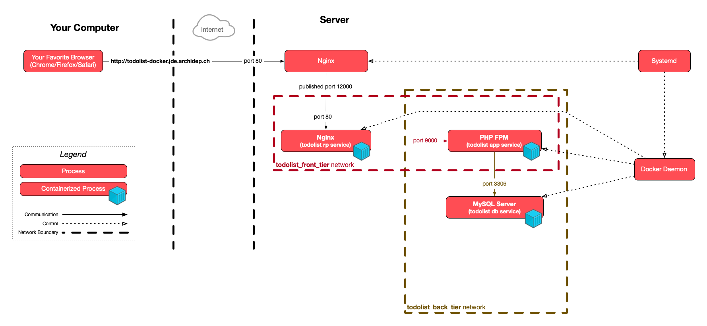
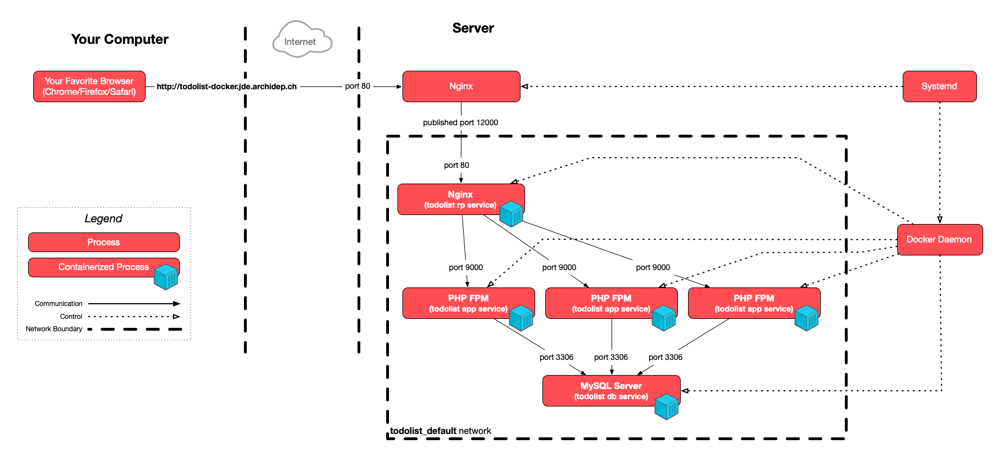

This exercise begins on your local machine.
Deploy a PHP application with Docker Compose
The goal of this exercise is to learn to deploy a multi-container web application with Docker Compose. You will create a portable Compose file that can be used to deploy the same containers on both your local machine and your cloud server.
Your inescapable references for this exercise are the following documents:
- The Dockerfile reference, which describes the commands you can use in a Dockerfile.
- The Compose file reference, which describes the Compose file format.
On this page
Table of contents
 Legend
Legend
Parts of this exercise are annotated with the following icons:
-
 A task you MUST perform to complete the exercise
A task you MUST perform to complete the exercise
-
 Optional step that you may perform to make sure that
everything is working correctly, or to set up additional tools that are not required but can
help you
Optional step that you may perform to make sure that
everything is working correctly, or to set up additional tools that are not required but can
help you
-
 Advanced tips on how to go further (or
challenges!)
Advanced tips on how to go further (or
challenges!)
 The end of the exercise
The end of the exercise-
 The architecture of the software you ran or
deployed during this exercise
The architecture of the software you ran or
deployed during this exercise
-
 Troubleshooting tips: how to fix common problems you might
encounter
Troubleshooting tips: how to fix common problems you might
encounter
Make sure you have everything you need
You need to have Docker Desktop installed, which you should if you have performed the previous Docker exercise.
You need an up-to-date PHP todolist. Move to your PHP todolist repository on your local machine:
$> cd /path/to/projects/todolist
If you performed the Render deployment exercise, switch back to the main
branch:
$> git switch main
In the Render deployment exercise, a Dockerfile was provided for you. In this exercise, you will write one yourself, step by step.
Make sure your index.php file supports configuration through environment
variables. If you performed the relevant exercise earlier in the course,
the definition of the base URL and database connection parameters at the top
should look something like this:
define('BASE_URL', getenv('TODOLIST_BASE_URL') ?: '/');
// Database connection parameters.
define('DB_USER', getenv('TODOLIST_DB_USER') ?: 'todolist');
define('DB_PASS', getenv('TODOLIST_DB_PASS'));
define('DB_NAME', getenv('TODOLIST_DB_NAME') ?: 'todolist');
define('DB_HOST', getenv('TODOLIST_DB_HOST') ?: '127.0.0.1');
define('DB_PORT', getenv('TODOLIST_DB_PORT') ?: '3306');
If that’s not the case, adapt the index.php file, then commit and push your
changes.
Create a compose file to deploy the PHP todolist application
Take a look at the architecture of the PHP todolist deployment with nginx and the FastCGI process manager exercise you did earlier in the course:

Aside from systemd, your server-side deployment is composed of 3 processes:
- Nginx, the reverse proxy.
- The PHP todolist, the application itself.
- A MySQL database server.
In a Compose deployment, you want to isolate them as separate services as per the Docker philosophy. Therefore, your goal is to write a Compose file defining 3 services.
Start by naming these services. Choose a naming convention:
- Some people prefer to name each service after the tool that will be running in
the container, for example:
nginx,php,mysql. - Other prefer a more semantic naming convention:
reverse-proxy,applicationanddatabase(orrp,appanddbif you are feeling terse).
You will sometimes use these names on the command line when running Compose
commands, e.g. docker compose up app, so choose
wisely. The rest of the
instructions in this exercise will assume the second choice.
The basic structure of your Compose file will be something like:
name: todolist
services:
rp:
# define the reverse proxy service
app:
# define the application service
db:
# define the database service
Define the database service
Let’s start from the bottom up: the first service you will define and the first container you will run is the database.
Create a compose.yml file in the PHP todolist repository with the following
(incomplete) contents for now:
name: todolist
services:
db:
If you remember the very first PHP todolist SFTP deployment exercise, you had to do a few things to set up the database:
- Install the MySQL database server with
sudo apt install mysql-server - Perform the base configuration with
sudo mysql_secure_installation, including:- Setting the MySQL root password
- Various other security-related settings
- Intialize the todolist database by running the PHP todolist’s SQL script with
sudo mysql < todolist.sql
You will now learn to do the same in a Docker container with Docker Compose.
Use the correct Docker image
There is an official MySQL Docker image which provides you with a fully functional and configurable MySQL database server container. That takes care of step 1 and most of step 2.
Find out how to configure the service appropriately
Look at the “Environment Variables” section of the image’s
documentation. It describes a few variables you will
find useful. As part of step 2, you manually configured the MySQL root password
in the original deployment exercise. With this Docker image, you will do that
simply by setting the $MYSQL_ROOT_PASSWORD environment variable in the
container. The root password will then be automatically set for you when the
container starts.
When running a container manually, you set environment variables with the -e VAR=VALUE or --env VAR=VALUE options, e.g. docker run -e MYSQL_ROOT_PASSWORD=changeme mysql:9.5.0. But you will not be doing that in
this exercise. You will describe the configuration of the database service in
the Compose file, and Docker Compose will run the container for you.
During step 3 of the original deployment exercise, you then executed the PHP
todolist’s todolist.sql script. For the purposes of this exercise, this script
can be divided into two sections:
-
The database creation, user creation & privileges configuration:
CREATE DATABASE IF NOT EXISTS todolist;CREATE USER IF NOT EXISTS 'todolist'@'localhost' IDENTIFIED BY 'change-me-now';GRANT ALL PRIVILEGES ON todolist.* TO 'todolist'@'localhost'; -
The creation of the database structure:
USE todolist;CREATE TABLE IF NOT EXISTS `todo` (`id` bigint(20) NOT NULL AUTO_INCREMENT,`title` varchar(2048) NOT NULL,`done` tinyint(1) NOT NULL DEFAULT '0',`created_at` timestamp NOT NULL DEFAULT CURRENT_TIMESTAMP,PRIMARY KEY (`id`));
If you read the “Environment Variables” section of the MySQL Docker image’s documentation again, you will notice that there are 3 environment variables you can set that will take care of the first part of the setup for you:
- Setting
$MYSQL_DATABASEwill automatically create a database with that name. - Setting
$MYSQL_USERand$MYSQL_PASSWORDwill automatically create a user with access to that database.
Simply by settings these environment variables, the container will perform the required setup when it starts for the first time.
That leaves only the creation of the database structure. This cannot simply be done by setting an environment variable, since this part is not generic: it is completely dependent on the specific application you are deploying, in this case the PHP todolist.
So you need to run the second part of the todolist.sql script in the context
of the MySQL database server running in the container. How?
Read the “Initializing a fresh instance” section of the MySQL Docker image’s
documentation. It explains that any SQL script you
place in the /docker-entrypoint-initdb.d directory of the container will be
executed when the MySQL database server is initialized the first time the
container starts.
This means that you simply have to put the todolist.sql script in this
directory, and it will be magically run for you!
But you only need to run the second part, what about skipping the first part
(the database and user creation)? Luckily, the todolist.sql script uses IF NOT EXISTS in its queries. Since the MySQL database and user will already be
created automatically by the container when it starts, the todolist.sql script
will simply skip creating what is already there. It can actually be run as it
is, without any changes.
There is one last thing that you did not actually do yourself during the original deployment exercise, but was done for you when you installed the MySQL server. As indicated in the architecture diagram: MySQL is managed by systemd, which will automatically start it when your server starts, and restart it if it crashes. You also want this with your Compose deployment, at least for production deployments.
When running containers with Docker Compose, the Docker daemon will assume the responsibility of managing the containers, e.g. starting and restarting them, depending on how you define your Compose services. Later, when you replicate your Compose deployment on your cloud server, the Docker daemon itself will be managed by systemd.
Write the database service
So, let’s recap what you need to define your MySQL Compose service:
- Use the official MySQL Docker image.
- Set a number of environment variables to perform the necessary setup (database and user creation).
- Execute the
todolist.sqlscript when the database server is initialized. - Restart the database server automatically when there is an issue (systemd’s old job).
You can now write the database service definition in your Compose file. Here’s a few pointers:
| What | Documentation |
|---|---|
| Use the official image | image |
| Set environment variables | environment |
| Restart automatically | restart |
Execute todolist.sql |
volumes |
Read the documentation and fill in the definition for your db service:
name: todolist
services:
db:
image: # ...
environment: # ...
restart: #...
volumes: # ...
Here are a few things you want to watch out for:
-
When setting the
imagekey, be sure to select a version, either a very specific version (MAJOR.MINOR.PATCH, e.g.1.2.3) or a more general version (MAJOR.MINOR/MAJOR, e.g.1.2or1) if the Docker image supports it.DO NOT use the
latestimage (which is used implicitly if you do not set a version). Using thelatestimage means that a totally different (and maybe unsupported) version of the image may be used at different points in time, potentially breaking your deployment. -
When setting variables with the
environmentkey, DO NOT hardcode sensitive secrets like passwords in the Compose file. Having secrets in your repositories is a bad security practice.There are several ways to set environment variables with Compose. One of the cleanest ways when it comes to your repository is to create a
.envfile with your sensitive variables:# .envMYSQL_ROOT_PASSWORD=my-secret-root-passwordMYSQL_PASSWORD=my-secret-user-passwordAdd this file to your repository’s
.gitignorefile to make sure it is not committed:$> echo .env >> .gitignore$> git add .gitignore$> git commit -m "Ignore .env file"Docker Compose will automatically read the
.envfile in the working directory and fill in the variables for you:services:example-service:environment:VAR1: value1 # hardcoded valueVAR2: # no value, will be read from .env or the environment
An even better way to manage sensitive information in a Compose project is to
use Compose secrets, but that would require setting up
Docker Swarm. We will definitely not go that far in this
exercise.
-
When specifying the host part of a bind mount in a Compose file, you can use
.as a reference to the directory containing the Compose file, e.g.:services:example:volumes:- ./some-file.txt:/container/path/some-file.txtThis bind-mounts the
some-file.txtfile located in the same directory as the Compose file into the container in the/container/pathdirectory. -
When you specify volume mounts, whether they are files or directories, the mounts are read-write by default, meaning that the process running inside the container can modify the file and/or directories you are mounting from the host. But you can configure them to be read-only instead.
When you mount a file or a directory inside a container, always ask yourself the following question: does the container need to modify this file or directory to work? If no, mount it as read-only to minimize the attack surface of your container. Better safe than sorry.
Run the database service
Once you are done, you can run this service:
$> docker compose up db
Attaching to db-1
db-1 | 2024-01-25 18:38:13+00:00 [Note] [Entrypoint]: Entrypoint script for MySQL Server 9.5.0-1.el8 started.
...
db-1 | 2024-01-25 18:38:21+00:00 [Note] [Entrypoint]: /usr/local/bin/docker-entrypoint.sh: running /docker-entrypoint-initdb.d/todolist.sql
...
db-1 | 2024-01-25T18:38:22.761176Z 0 [System] [MY-015015] [Server] MySQL Server - start.
...
db-1 | 2024-01-25T18:38:23.262642Z 0 [System] [MY-010931] [Server] /usr/sbin/mysqld: ready for connections. Version: '9.5.0' socket: '/var/run/mysqld/mysqld.sock' port: 3306 MySQL Community Server - GPL.
As you can see in the above example, the logs should indicate the execution of
the todolist.sql script (without any errors after it), as well as the
successful launch of the MySQL database server at the end (“ready for
connections”). There will probably be lots of logs in between, as indicated by
the ....
If you get errors, stop the container with Ctrl-C, delete everything with
docker compose down, fix your Compose file, and try again.
Great, you have the database running! It’s not accessible by anything yet, so
that’s not very interesting. Stop it with Ctrl-C, and let’s move on to the
next step.
Define the application service
The next service you will define is the application. That service will run the actual PHP todolist application in a container.
In the original deployment exercise, you ran the PHP todolist manually with the PHP development server. Then, you improved upon that deployment by using the FastCGI Process Manager (FPM) instead during the PHP-FPM deployment exercise.
You will now replicate this deployment in the form of Docker containers.
Create a Dockerfile for the PHP todolist
You will of course not find an existing Docker image to run the PHP todolist on Docker Hub, since it is a custom application used in this course and not a popular tool like MySQL.
You will therefore create a Dockerfile to create a Docker image for the PHP todolist, much like you did in the previous Docker exercise.
Publishing the Docker image is outside the scope of this course, but it would be
very easy to do: all you would need is a free Docker account, and you could use
the docker push command to publish the image under your account.
There is no official FPM image, but a popular one is the Bitnami PHP-FPM
image. If you read its documentation, it is trivial to use; you
simply need to load your PHP code under the /app directory in the container,
and voilà:
$> docker run -it -v /path/to/app:/app bitnami/php-fpm
That’s almost good enough to run the PHP todolist. There’s just one catch: in the PHP-FPM deployment exercise, we had to add environment variables to FPM.
We have to do the same with Docker. But we don’t want to do exactly the same: we don’t want the PHP todolist’s database password to be baked into the image. That would be the same as committing it into the repository! Anybody who got a hold of the image would find the password inside.
In the FPM exercise, we added a line similar to this to FPM’s configuration file:
env[TODOLIST_DB_PASS] = "my-super-secret-password"
It just so happens that if you read the comments in the section of FPM’s configuration file where we added that variable, it states that “All $VARIABLEs are taken from the current environment.” This means that we can reference environment variables in the file:
env[TODOLIST_DB_PASS] = $TODOLIST_DB_PASS
If we add that line to FPM’s configuration file, FPM will read it on startup and make it available to the PHP code it interprets.
So, let’s recap what you need in this PHP todolist Dockerfile:
| What to do | How to do it |
|---|---|
| Use the Bitnami PHP-FPM image | FROM command |
Put the todolist’s code (index.php) in the /app directory |
COPY command |
| Configure FPM to forward the todolist’s environment variables | Huh? |
Let’s write that file. Create a Dockerfile file in the PHP todolist repository
and fill in the FROM and COPY commands with something appropriate:
FROM ...
COPY ...
For the last step, you want to modify the FPM configuration file in the Bitnami PHP-FPM container and add the necessary lines to forward the todolist’s environment variables to the PHP code intepreted by FPM.
There are two main ways to do that:
- Replace FPM’s entire configuration file in the image with your own, including
the additional lines. In this case, you would store that file in your
repository and use a
COPYcommand. - Append the additional lines to the end of FPM’s existing configuration file.
In this case, you can use a
RUNcommand and simply append the lines with Unix’s trustyechocommand.
Which is best? It depends. If you only have a few changes to make, which is the case in this exercise, the second solution seems best. If you have to make sweeping changes throughout the whole file, it might be best to craft your own custom file with appropriate documentation in the form of comments.
To keep things simple, let’s simply add the lines we need at the end. Add this
to the Dockerfile after the FROM and COPY commands you already have:
RUN echo >> "/opt/bitnami/php/etc/php-fpm.d/www.conf" && \
echo 'env["TODOLIST_DB_USER"] = $TODOLIST_DB_USER' >> "/opt/bitnami/php/etc/php-fpm.d/www.conf" && \
echo 'env["TODOLIST_DB_PASS"] = $TODOLIST_DB_PASS' >> "/opt/bitnami/php/etc/php-fpm.d/www.conf" && \
echo 'env["TODOLIST_DB_NAME"] = $TODOLIST_DB_NAME' >> "/opt/bitnami/php/etc/php-fpm.d/www.conf" && \
echo 'env["TODOLIST_DB_HOST"] = $TODOLIST_DB_HOST' >> "/opt/bitnami/php/etc/php-fpm.d/www.conf" && \
echo 'env["TODOLIST_DB_PORT"] = $TODOLIST_DB_PORT' >> "/opt/bitnami/php/etc/php-fpm.d/www.conf"
How could you have known that the FPM configuration file is stored under
/opt/bitnami/php/etc/php-fpm.d/www.conf in this image?
-
Read the documentation of the Bitnami PHP-FPM image. It makes several mentions of the
/opt/bitnami/php/etcdirectory, clearly indicating that this is where the PHP configuration files, and therefore FPM’s configuration files, are stored. -
Run the image with a shell and explore its file system:
$> docker run --rm -it --entrypoint bash bitnami/php-fpmroot@ebc62d5fd3a1:/app# ls /opt/bitnami/php/etcBy analogy with the FPM exercise, it’s not hard to find the same
www.conffile we edited then.
And you’re good to go! If you want to test that this Dockerfile is at least valid, you can try to build it:
$> docker build -t todolist/app .
There should be no errors in the output.
Your Dockerfile should look something like this:
FROM bitnami/php-fpm
COPY index.php /app/
RUN echo >> "/opt/bitnami/php/etc/php-fpm.d/www.conf" && \
echo 'env["TODOLIST_DB_USER"] = $TODOLIST_DB_USER' >> "/opt/bitnami/php/etc/php-fpm.d/www.conf" && \
echo 'env["TODOLIST_DB_PASS"] = $TODOLIST_DB_PASS' >> "/opt/bitnami/php/etc/php-fpm.d/www.conf" && \
echo 'env["TODOLIST_DB_NAME"] = $TODOLIST_DB_NAME' >> "/opt/bitnami/php/etc/php-fpm.d/www.conf" && \
echo 'env["TODOLIST_DB_HOST"] = $TODOLIST_DB_HOST' >> "/opt/bitnami/php/etc/php-fpm.d/www.conf" && \
echo 'env["TODOLIST_DB_PORT"] = $TODOLIST_DB_PORT' >> "/opt/bitnami/php/etc/php-fpm.d/www.conf"
Write the application service
It is now finally time to define the application service. Here’s what you want to do:
- Run a container based on the Dockerfile you just created.
- The image might need to be built if it has never been built locally.
- Pass some environment variables to FPM, at the very least:
- The host at which the database can be reached (the
$TODOLIST_DB_HOSTvariable). - The password of the
todolistdatabase user (the$TODOLIST_DB_PASSvariable).
- The host at which the database can be reached (the
- Restart FPM automatically when there is an issue (systemd’s old job).
There’s also one last thing that is different compared to the PHP-FPM exercise: now that you are running 2 isolated containers, FPM and MySQL, you need to express the dependency that exists here. The application service needs the database service. There would be no point running the PHP todolist without its database. So we also need to:
- Specify that the application service depends on the database service.
You can now write the application service definition in your Compose file. Here’s a few pointers:
| What | Documentation |
|---|---|
| Use/build your custom Dockerfile | build |
| Configure the dependency | depends_on |
| Set environment variables | environment |
| Restart automatically | restart |
Read the documentation and fill in the definition for your app service:
services:
app:
build: # ...
image: # ...
depends_on: # ...
environment: # ...
restart: #...
# ...
You may set the image key or not in this case. It is
optional when you also have a build key. Setting it is good practice, since it
will tag your Docker image, making it easier to find in the
list of images (see the list with the docker images command).
Concerning the $TODOLIST_DB_HOST variable, you need to set it to the host (IP
address or domain) at which the database can be reached. The database container
will have an IP address when it runs, but you cannot know that in advance, so
you cannot put it in the Compose file.
If you read up on Compose networking, you will see that Docker Compose performs lots of magic to help you there. It will:
- Automatically create a default network that all service containers will join.
- Give a resolvable name to each container based on the service name.
So this means that in your little Compose architecture, the database can be
reached at the host db. Yes, db is actually a valid hostname, one without a
TLD (think example.com without the .com).
So the value of the $TODOLIST_DB_HOST variable should simply be db.
As for the value of $TODOLIST_DB_PASS, you should of course leave it blank in
the Compose file and add it to your .env file. You should use the same
password that you used for the MYSQL_PASSWORD variable of the database
service.
Run the application service
You can now run the application!
You can run the application service the same way you did the database service,
with one little addition. You need to add the --build option so that Docker
Compose knows to build (or re-build) the Dockerfile for the application:
$> docker compose up --build app
...
[+] Building 0.1s (8/8) FINISHED
...
Attaching to app-1
So that’s nice, the container is launched, but where are my logs?! Unfortunately, FPM is not very verbose there and there’s not a lot to see at the moment.
It’s also unfortunate that FPM is not a web application server, it’s only a
protocol for a web server to interpret PHP code. So even if you published the
application container’s FPM port (which happens to be 9000) on your host, you
could not see the PHP todolist working yet.
You can stop the command with Ctrl-C.
So what about that web server?
Define the reverse proxy service
The last service you need is the reverse proxy. You will use nginx, much like in the PHP-FPM deployment exercise, except that you will of course run it as a service in an isolated container.
Since nginx is one of the most popular reverse proxies and web servers, there is
of course an official nginx image on Docker Hub.
So, think about what do you need your reverse proxy to do, based on the FPM deployment exercise.
The reverse proxy needs to listen on a port, e.g. 80, the default HTTP
port, or maybe a custom port for local testing. It already listens on a port
inside the container, but you will need to publish the port on your host,
much like you did during the previous Docker exercise.
The reverse proxy must proxy requests to the application service. You know how to do this from the FPM exercise: you must create an nginx site configuration file to serve the application.
As we’ve seen before when learning about container file system
isolation, and as is indicated in the nginx image’s
documentation, the setup of nginx is a little bit simpler
than your cloud server’s full-fledged installation. You can see that by running
a few commands to look around in the container:
# List the contents of the /etc/nginx directory
$> docker run --rm -it --entrypoint ls nginx:1.29-alpine /etc/nginx
conf.d fastcgi.conf fastcgi_params mime.types modules nginx.conf scgi_params uwsgi_params
# List the includes in nginx's main configuration file
$> docker run --rm -it --entrypoint grep nginx:1.29-alpine include /etc/nginx/nginx.conf
include /etc/nginx/mime.types;
include /etc/nginx/conf.d/*.conf;
# Display the contents of the default site configuration present in the image
$> docker run --rm -it --entrypoint ls nginx:1.29-alpine /etc/nginx/conf.d
default.conf
Instead of the sites-available and sites-enabled directories, there is
simply a single conf.d directory with a default.conf site configuration
there by default.
As you can see in the image’s documentation, there are
several ways to add your site’s configuration to the container, including a
template system. But for the purposes of this exercise, let’s keep it simple and
simply overwrite the /etc/nginx/conf.d/default.conf file.
Just like the other services in your Compose project, the reverse proxy also needs to be restarted if it crashes.
Finally, since the only purpose of this service is to serve the application service defined in the same Compose file, it would be fair to say that the reverse proxy service depends on the application service. There would be no point running this reverse proxy without the application service as well.
Create an nginx site configuration file
Create a site.conf file in the PHP todolist repository.
Since the goal of this exercise is to work on Docker Compose, in the interest of
efficiency, here’s a configuration that will work:
server {
listen 80;
server_name _;
root /app;
location / {
try_files $uri $uri/index.php;
}
location ~ \.php$ {
fastcgi_pass app:9000;
fastcgi_index index.php;
include fastcgi.conf;
}
}
The main differences compared to the configuration that you wrote for the FPM deployment exercise are:
- You do not need a specific
server_nameso you can use the placeholder_which means “any server name”. The entire purpose of this reverse proxy is to serve the PHP todolist and no other application, so we do not care about the domain name. - The
rootis of course/app, which is where you put the PHP todolist’s code in the PHP todolist Docker image you wrote earlier. - For reasons that we will not go into here, configuring the index page needs to
be done a little differently with this extra
location / {}block and thefastcgi_indexdirective. This will make nginx serve the PHP todolist’sindex.phppage in the/appdirectory (specified by therootdirective). - The
include fastcgi.conf;directive is equivalent to what you did in the other exercise, except that the path to the file is different. - The
fastcgi_pass app:9000;is equivalent to what you did in the other exercise, except that instead of proxying to an application that is running onlocalhost, you are proxying to the application service container which is reachable at the network nameapp(just like the database service container is reachable at the namedb).
Write the reverse proxy service
Let’s recap. Here’s what the reverse proxy service needs to do:
- Use the official nginx Docker image.
- Publish a port on the host.
- Specify a dependency on the application service.
- Restart automatically in case of issues.
- Use our nginx site configuration file instead of the image’s default configuration.
You can now write the reverse proxy service definition in your Compose file. Here’s a few pointers:
| What | Documentation |
|---|---|
| Use the official nginx Docker image | image |
| Publish a port on the host | ports |
| Specify a dependency on the application service | depends_on |
| Restart automatically | restart |
| Use our nginx configuration file | volumes |
Read the documentation and fill in the definition for your rp service:
services:
rp:
image: # ...
ports: # ...
depends_on: # ...
restart: #...
volumes: #...
# ...
Note that nginx has images based on the lightweight and secure Alpine Linux distribution. Choose one of these for a smaller and more efficient Docker image, benefiting from Alpine’s minimalistic footprint.
Concerning the port, choose your favorite port that is currently free on your
local machine, let’s say 12000. You need to publish port 80 of the nginx
container to that port on your host machine. The documentation of the ports
key explains how to do this.
As for the volumes, you need to mount the site.conf file in place of the
container’s /etc/nginx/conf.d/default.conf file. It is easy to find out how in
the documentation of the volumes key.
Run the reverse proxy service
You now have the whole Compose architecture for this exercise: the good, the
bad, and the ugly, the database, the application, and the reverse proxy.
All that’s left to do is run it:
$> docker compose up --build
Running docker compose up without specifying a service name (like app or
rp) will run all services and show the combined logs for all of them in your
terminal.
You should see a mix of logs concerning the database and reverse proxy, and still not much from the application at this point.
Assuming you chose port 12000 and that you have configured everything
correctly, you should be able to use the PHP todolist at
http://localhost:12000!
Yay! 
Add a few todos. (Surely you have some laundry to clean or a galaxy to save this week.)
Run services in the background
Stop the Compose command with Ctrl-C. The PHP todolist should not be reachable
any more.
Instead of running your Compose services in the foreground like you did so far
with a basic up command, you can add the -d or --detach option to let
Compose hand over the services to the Docker daemon and handle everything for
you:
$> docker compose up --build --detach
Note that you gain back control of your terminal, and the PHP todolist is again available at http://localhost:12000.
Docker Compose has other useful commands, like ps to list the status of the
services defined in the Compose file:
$> docker compose ps
NAME IMAGE COMMAND SERVICE CREATED STATUS PORTS
todolist-app-1 todolist/app "php-fpm -F --pid /o…" app 28 minutes ago Up 3 seconds 9000/tcp
todolist-db-1 mysql:9.5.0 "docker-entrypoint.s…" db 28 minutes ago Up 3 seconds 3306/tcp, 33060/tcp
todolist-rp-1 nginx:1.29-alpine "/docker-entrypoint.…" rp 28 minutes ago Up 3 seconds 0.0.0.0:12000->80/tcp
You can also use docker compose stop [service], docker compose start [service], docker compose restart [service], and various other commands you
can learn about by running docker compose help.
When you run Compose services in production on a server, you generally want to
run them in detached mode so you do not have to hang around for the services to
stay up. If you have configured your restart keys correctly, the Docker daemon
will make sure the services stay alive (and trusty old systemd will watch over
the daemon itself).
Make it persist
Stop and remove all containers running in the background with the following command:
$> docker compose down
Now bring the whole thing back up:
$> docker compose up --build --detach
Visit http://localhost:12000 again. Oh no! All your todos are gone!
Remember that Docker containers are supposed to be ephemeral: the MySQL
server running in the database service container is storing its data in the
container’s file system, i.e. the thin writable layer on top of the image’s
layers. That layer was destroyed when the container was deleted by Compose’s
down command.
You don’t want your data to be dependent on the life of a specific container. Containers should easily be destroyed and recreated as necessary.
You must store data in a more persistent way. As you’ve seen, there are two ways to do that with Docker (and Docker Compose):
- Bind-mount a host directory into the container.
- Use a Docker-managed volume.
If you read the “Where to Store Data” section of the mysql image’s
documentation, you will see that the MySQL database
server stores its data in the /var/lib/mysql directory inside the container’s
file system.
You can mount a directory of your host machine in place of that directory:
services:
db:
# ...
volumes:
- './data:/var/lib/mysql'
# ...
#...
If you choose this solution, the data is stored directly on the host machine’s
file system, in this case, the data directory relative to the Compose file (in
the PHP todolist repository, so you might want to add data to your
.gitignore).
Or you can let Docker handle your data in a volume:
services:
db:
# ...
volumes:
- 'db_data:/var/lib/mysql'
# ...
#...
volumes:
db_data:
Note that you are using db_data, a name, instead of a path like ./data
above. This tells Compose that you want to mount a named volume in place of the
/var/lib/mysql directory. This named volume must be defined under the
volumes key at the top level of the Compose file
as shown in the example.
The second solution of named volumes is more portable and flexible. Named volumes are also stored on the host’s file system by default, but it is possible to configure Docker to store volumes elsewhere using Docker Engine plugins. For example, you could store volumes in a cloud storage service.
Choose one of the 2 solutions, and re-run the Compose command to start your services:
$> docker compose up --build --detach rp
Docker Compose should automatically detect that the definition of the database service has changed, and restart that service’s containers. It may also restart the containers of services that depend on the database (all of them in this case, directly or indirectly).
You may now use the PHP todolist (add a few todos) and gleefully destroy and recreate your containers without any data loss:
$> docker compose down
$> docker compose up --build --detach rp
If you’ve chosen to persist your data with a bind mount, you can list the
contents of the data directory on your host machine to see the raw database
files created by MySQL:
$> ls data
auto.cnf ca-key.pem ib_buffer_pool mysql_upgrade_history private_key.pem sys
...
If instead you’ve chosen to use a named volume, you can list your Docker volumes
with the docker volume ls command:
$> docker volume ls
DRIVER VOLUME NAME
local todolist_db_data
...
You should see a volume named todolist_db_data, assuming your Compose project
is named todolist (the volume name is prefixed with the project name by
default). If you want to see what’s in it, you can spin off a temporary Alpine
Linux container with that volume mounted and list its contents:
$> docker run --rm -v todolist_db_data:/mnt/data alpine ls /mnt/data
auto.cnf ca-key.pem ib_buffer_pool mysql_upgrade_history private_key.pem sys
...
If you’ve chosen host-based storage, you can still erase your data by simply
deleting the data directory yourself (stop the containers first). If you’ve
chosen volume-based storage, you can add the -v or --volumes option to the
down command to also delete associated volumes: docker compose down -v.
Commit and push your changes
Now that you have a working Docker Compose deployment ready, add, commit and push all the files you have created:
$> git add .gitignore Dockerfile compose.yml site.conf
$> git commit -m "Add docker compose file"
$> git push
You should see those files appear in your repository on GitHub.
Your Compose file should look something like this if you’ve chosen volume-based storage:
name: todolist
services:
rp:
image: nginx:1.29-alpine
ports:
- '12000:80'
depends_on:
- app
restart: on-failure
volumes:
- './site.conf:/etc/nginx/conf.d/default.conf:ro'
app:
build: .
image: todolist/app
depends_on:
- db
environment:
TODOLIST_DB_HOST: db
TODOLIST_DB_PASS:
restart: on-failure
db:
image: mysql:9.5.0
environment:
MYSQL_ROOT_PASSWORD:
MYSQL_DATABASE: todolist
MYSQL_USER: todolist
MYSQL_PASSWORD:
restart: on-failure
volumes:
- './todolist.sql:/docker-entrypoint-initdb.d/todolist.sql:ro'
- 'db_data:/var/lib/mysql'
volumes:
db_data:
And if you’ve chosen a bind mount for storage:
name: todolist
services:
rp:
image: nginx:1.29-alpine
ports:
- '12000:80'
depends_on:
- app
restart: on-failure
volumes:
- './site.conf:/etc/nginx/conf.d/default.conf:ro'
app:
build: .
image: todolist/app
depends_on:
- db
environment:
TODOLIST_DB_HOST: db
TODOLIST_DB_PASS:
restart: on-failure
db:
image: mysql:9.5.0
environment:
MYSQL_ROOT_PASSWORD:
MYSQL_DATABASE: todolist
MYSQL_USER: todolist
MYSQL_PASSWORD:
restart: on-failure
volumes:
- './todolist.sql:/docker-entrypoint-initdb.d/todolist.sql:ro'
- './data:/var/lib/mysql'
And here’s a .env file that works for both:
MYSQL_PASSWORD=changeme
TODOLIST_DB_PASS=changeme
MYSQL_ROOT_PASSWORD=noreallychangeme
Deploy it on your cloud server
To demonstrate how portable Docker Compose is, you will now deploy your new Compose project on your cloud server, based on the same Compose file.
Connect to your cloud server with SSH for the rest of this exercise.
Retrieve your Compose project on the server
If you followed the course’s exercises so far, you should have the PHP todolist repository on GitHub and a clone of it on your cloud server as well.
Once you are connected to your cloud server, go into the PHP todolist repository and pull the changes you just pushed:
$> cd todolist-repo
$> git pull
Change todolist-repo if necessary. You might have named it something else on
your server.
Make sure Docker works on your cloud server
You should already have installed Docker on your cloud server during the
previous exercise. You can run sudo docker run hello-world to
check everything works. You should see the “Hello from Docker!” message without
error.
Copy your .env file to the server
Run the following command on your local machine in the PHP todolist
repository to copy your local .env file to the server:
$> scp .env jde@W.X.Y.Z:todolist-repo
Replace jde with your username and W.X.Y.Z with your cloud server’s public
IP address (the same information you use to connect to your server with SSH),
and if necessary change todolist-repo to the directory where the todolist
resides on your server.
If you prefer, you could also copy the contents of your local .env file with
your favorite text editor, open a new .env file on your cloud server in the
todolist repository with nano .env, and paste and save the contents there.
Run the Compose project on your server
Now run the application service on your cloud server. Assuming you are in
the PHP todolist repository (the todolist-repo directory), where your
compose.yml file is located, run the same command as before (with sudo):
$> sudo docker compose up --build --detach
The same containers should now be running on your server:
$> sudo docker compose ps
NAME IMAGE COMMAND SERVICE CREATED STATUS PORTS
todolist-app-1 todolist/app "php-fpm -F --pid /o…" app 2 minutes ago Up 2 minutes 9000/tcp
todolist-db-1 mysql:9.5.0 "docker-entrypoint.s…" db 20 minutes ago Up 20 minutes 3306/tcp, 33060/tcp
todolist-rp-1 nginx:1.29-alpine "/docker-entrypoint.…" rp 2 minutes ago Up 2 minutes 0.0.0.0:12000->80/tcp, :::12000->80/tcp
Create a new nginx site configuration file on your server with sudo nano /etc/nginx/sites-available/todolist-docker and save the following contents in
it:
server {
listen 80;
server_name todolist-docker.jde.archidep.ch;
location / {
proxy_pass http://localhost:12000;
}
}
Replace jde with your username and archidep.ch with your assigned domain for
the course, as you did for previous deployment exercises.
Link and enable that configuration:
$> sudo ln -s /etc/nginx/sites-available/todolist-docker /etc/nginx/sites-enabled
$> sudo nginx -t
$> sudo nginx -s reload
You should now be able to visit http://todolist-docker.jde.archidep.ch in your browser and see your Compose deployment live online!
Note that this deployment is using an isolated database from your previous deployment at http://todolist.jde.archidep.ch. Changes in one will not be reflected in the other.
Note that the only requirement to perform this deployment on a fresh server is to have Docker and nginx installed on the server. You don’t have to install PHP, PHP-FPM, MySQL or to configure systemd. Docker handles (almost) everything for you.
You could even get rid of the nginx installation on the server and run it entirely as a Docker container as well, but that would require containerizing all other deployments you have made so far.
What have I done?
You have learned another way to deploy a web application: with Docker and Docker Compose. As you have seen, once you have your Compose file working locally, deploying it to a server is trivial. You basically only need to install Docker and deploy away. Docker Compose really makes it easy to package an entire project’s architecture and replicate it on other machines.
Architecture
This is a simplified architecture of the main running processes and communication flow at the end of this exercise:

{kind=link}
Note
Note that this diagram only shows the processes involved in this exercise, ignoring the other applications we have also deployed on the server.
Going further
There’s a lot more you can do with Docker and Docker Compose. Here’s a few ideas.
Make it more configurable
You have hardcoded a few things in this exercise that should probably be more
configurable, for example port 12000.
The Compose file supports variable interpolation,
meaning you can use environment variables (from the .env file or the actual
host’s environment) basically anywhere in the file.
So, instead of hardcoding the published port like you did before:
ports:
- '12000:80'
You might want to make it configurable:
ports:
- '${TODOLIST_PORT:-12000}:80'
That way, it will use port 12000 by default, but you can also change it simply
by adding TODOLIST_PORT=... to the .env file.
Make it more secure
Docker is all about isolation, including network isolation as we’ve previously learned.
As you’ve seen in this exercise, Compose creates a default network to connect
all the services defined in your Compose file. You can see this network with the
docker network ls command:
$> docker network ls
NETWORK ID NAME DRIVER SCOPE
79343837cf3b bridge bridge local
0dca506f97c0 host host local
d54b832d124f none null local
9e0c4d2551f4 todolist_default bridge local
The containers for the three services of your Compose project (rp, app and
db) are in this todolist_default network, allowing them to communicate with
each other.
But think about it: is there a reason for the reverse proxy service to be able to communicate directly with the database service without going through the application service first? No way! The reverse proxy should not be able to talk to the database directly.
Using the top-level networks key of the Compose
file, you can define isolated networks in your Compose project. For example, for
the PHP todolist’s Compose file, you may define a backend network (for the
application to communicate with the database), and a frontend network (for the
reverse proxy to communicate with the application):
networks:
back_tier:
front_tier:
You can then connect the appropriate services into each network:
services:
rp:
# ...
networks:
- front_tier
app:
# ...
networks:
- front_tier
- back_tier
db:
# ...
networks:
- back_tier
Simply re-run the Compose command to recreate the containers with the new networking setup:
$> docker compose up --build --detach
This setup allows the reverse proxy and application to communicate since they are both in the frontend network. It also allows the application and database to communicate since they are both in the backend network. However, the reverse proxy and database cannot reach each other, as it should be.
The architecture of the main running processes and communication flow now looks like this, with two colors to differentiate the two networks:

{kind=link}
Note that the red arrow between the reverse proxy and the application, as well
as the yellow arrow between the application and the database, are not crossing
any network boundary. The reverse proxy and application can communicate within
the todolist_back_tier network they are both part of; similarly the
application and database can communicate within the todolist_front_tier
network they are both part of.
The reverse proxy and database cannot communicate directly since they are not part of any common network.
One-command horizontal scaling
If you performed the horizontal scaling exercise with the Fibscale application, you may recall that configuring horizontal scaling with systemd was fairly complex.
Do you know what it takes to perform horizontal scaling on your machine or on your server with Docker Compose?
One command:
$> sudo docker compose scale app=3
Drop the sudo if you are running this on your local machine.
You now have 3 instances of the application service running in separate containers:
$> sudo docker compose ps
NAME IMAGE COMMAND SERVICE CREATED STATUS PORTS
todolist-repo-app-1 todolist/app "php-fpm -F --pid /o…" app 14 seconds ago Up 13 seconds 9000/tcp
todolist-repo-app-2 todolist/app "php-fpm -F --pid /o…" app 5 seconds ago Up 2 seconds 9000/tcp
todolist-repo-app-3 todolist/app "php-fpm -F --pid /o…" app 5 seconds ago Up 3 seconds 9000/tcp
todolist-repo-db-1 mysql:9.5.0 "docker-entrypoint.s…" db 51 minutes ago Up 51 minutes 3306/tcp, 33060/tcp
todolist-repo-rp-1 nginx:1.29-alpine "/docker-entrypoint.…" rp 14 seconds ago Up 12 seconds 0.0.0.0:12000->80/tcp, :::12000->80/tcp
Starting from the initial architecture of the exercise, the architecture of the main running processes and communication flow now looks like this:

{kind=link}
Compose not only manages those three containers for you, but automatically load-balances the traffic from the reverse proxy service’s container to the application service’s containers.
You don’t even have to use an nginx upstream directive
directive like you did in the original horizontal scaling exercise.
Nginx simply contacts the service available at the app hostname, and Docker
Compose balances the load across the service’s containers out of the box!
Well, that was easy.
It is left as an exercise to the reader to visualize what the architecture would look like with both isolated networks and horizontal scaling.
Here’s a Compose file example with volume-based storage and all suggested improvements in place:
name: todolist
services:
rp:
image: nginx:1.29-alpine
ports:
- '${TODOLIST_PORT:-12000}:80'
depends_on:
- app
networks:
- front_tier
restart: on-failure
volumes:
- './site.conf:/etc/nginx/conf.d/default.conf:ro'
app:
build: .
image: todolist/app
depends_on:
- db
environment:
TODOLIST_DB_HOST: db
TODOLIST_DB_PASS:
networks:
- front_tier
- back_tier
restart: on-failure
db:
image: mysql:9.5.0
environment:
MYSQL_ROOT_PASSWORD:
MYSQL_DATABASE: todolist
MYSQL_USER: todolist
MYSQL_PASSWORD:
networks:
- back_tier
restart: on-failure
volumes:
- './todolist.sql:/docker-entrypoint-initdb.d/todolist.sql:ro'
- 'db_data:/var/lib/mysql'
networks:
back_tier:
front_tier:
volumes:
db_data:
Docker is so cool! I want more!
You can read the Docker documentation or about going further with Docker.
Want a challenge? Containerize the Flood It deployment (or an app of yours). On your own. Off you go!